搭建一个属于你自己的博客空间
博客，你可以把它当做你的一片小天地，或者小众一丢丢的交友平台；你可以把你的学习笔记/生活感悟/以及所有可以放进日记本、朋友圈的东西上传到你的博客平台。
简而言之，这是一个纯看个人兴趣爱好的小玩意儿
这里使用Hexo+GitHub Page搭建一个静态的博客站点，不需要服务器，完全免费
but it maybe need magic
注意：下述步骤中任一步骤你自己已经完成，就不用重复劳动啦
环境准备
考虑到大家基本都是使用windows环境，所以就默认在win系统下进行操作
Git
1. 下载
2. 安装
一直点Next就好了:
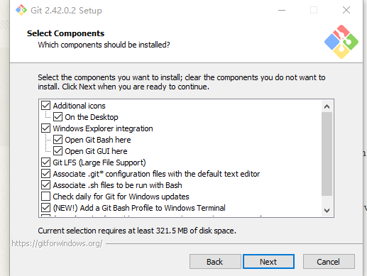
像这样：
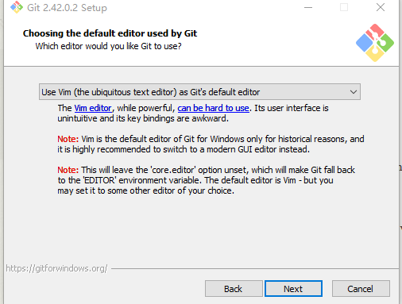
3. 检验是否安装成功
任何地方点击右键出现Git Bash即安装成功：
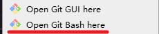
Node.js
同理，步骤基本差不多
1. 下载
2. 安装
注意安装时选择添加到环境变量，即Add to Path：
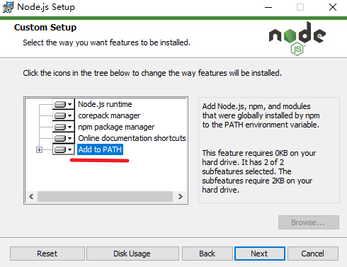
3. 检查
键盘点击win+R打开运行，输入cmd并回车打开终端，输入node -v和npm -v，均显示版本号即安装成功
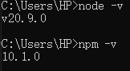
正式开始
注册一个GitHub账号
前往GitHub(全球最大同性交友平台) ，注册属于你自己的一个账号
，注册属于你自己的一个账号
注意：保存好你的用户名、密码以及邮箱
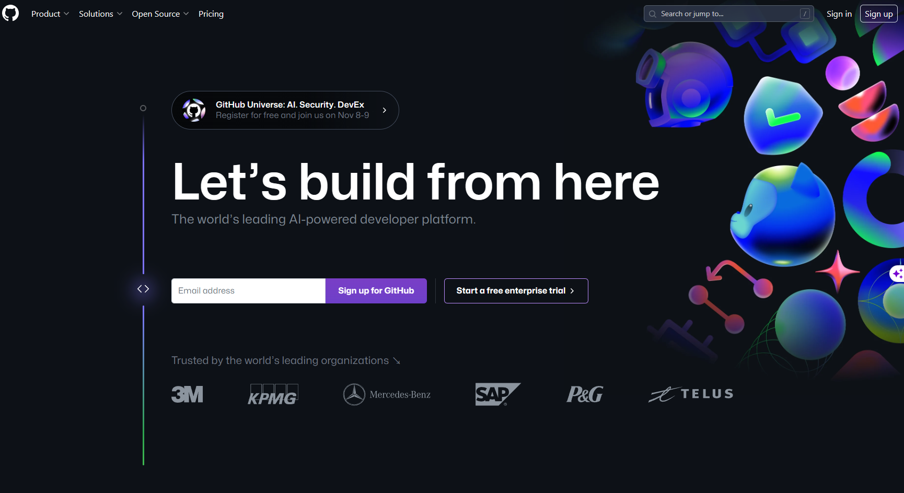
注册成功后你的GitHub主页(初始头像随机生成) ：
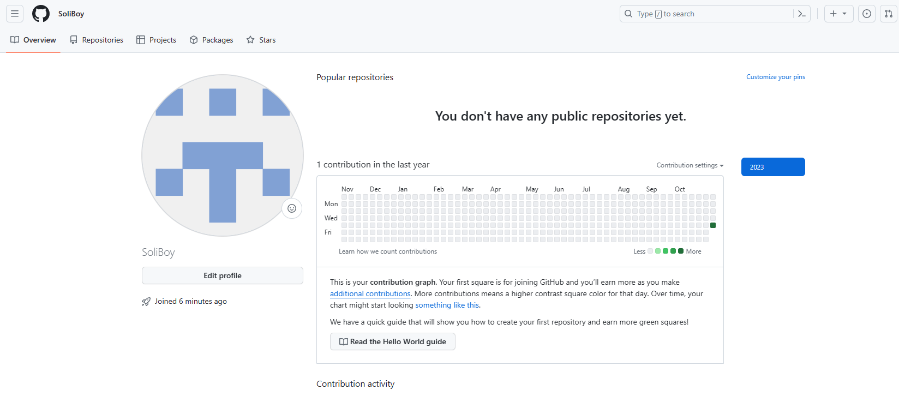
创建存放博客页面的代码仓库
在Repositories页面新建一个名为 你的用户名.github.io 的仓库，注意使用你自己GitHub账户的用户名，且仓库设为public，否则无法配置GitHub Page
示例：
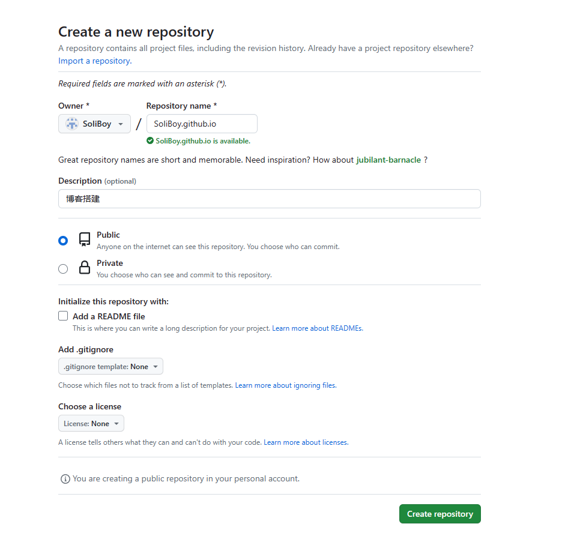
本地Git配置
在电脑任何位置(我这里是桌面)，右键打开Git Bash，输入：
git config --global user.name "你注册的用户名"
git config --global user.email "你注册的邮箱"
注意是你自己的用户名和邮箱，而且""符号是有的
再输入：
git config --global --list
即可查看刚刚的配置信息
示例：
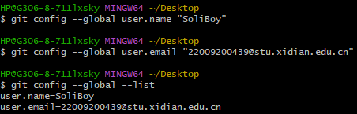
使用SSH链接到远程GitHub
继续使用刚刚的窗口，输入：
ssh-keygen -t rsa -C "你的邮箱" #邮箱同上
然后一直回车：
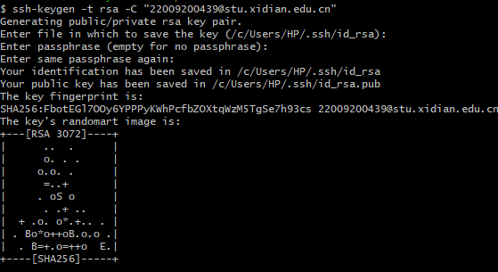
接着输入：
cd ~/.ssh #进入.ssh目录
ls #查看当前文件下文件
cat id_rsa.pub #将目标文件的内容输出
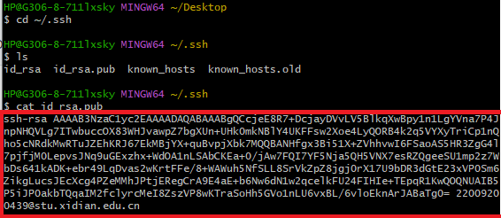
再复制公钥(圈出来的部分)，注意从ssh-rsa开始到邮箱号结束都是
然后，去到GitHub上，打开Settings，再进到SSH and GPG keys中，新建一个SSH key
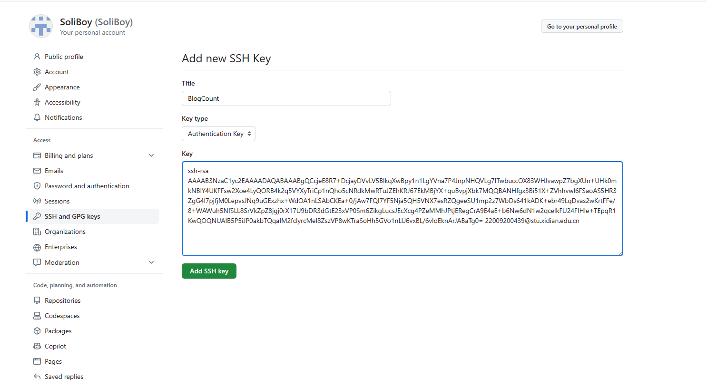
这里名字任取，内容即刚刚复制的公钥，点击Add SSH key即添加完成
再切回我们的Git Bash窗口，输入：
ssh -T git@github.com
出现以下提示即SSH连接成功(注意这里第一次连接可能需要键入yes，按提示操作即可)：
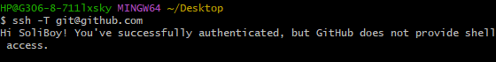
在Git Bash中输入exit即可退出窗口了
安装Hexo
打开终端，输入：
npm install -g hexo-cli
即可安装Hexo，没有报错即安装成功；且你输入hexo应当会出现相关信息：
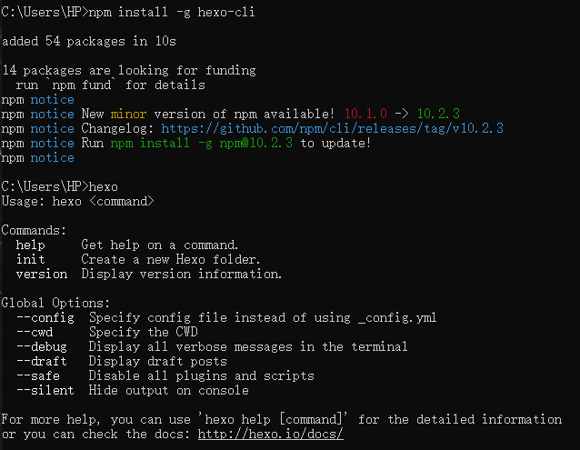
注：同样，在终端窗口输入exit即可关闭
新建Hexo项目
选择一个工作文件夹(你会长期使用并且打开方便的位置)，新建一个文件夹用来存放博客文件，进入这个文件夹并打开一个新的Git Bash窗口，输入:
hexo init
没有报错即创建Hexo博客仓库成功
- 这里可能会因为网络问题报错，记得代理一下
- 也可能会出现
mkdir即新建文件/文件夹不允许，请修改此文件夹的修改权限(具体方法可问搜索引擎)
接着输入
hexo g #生成静态页面
hexo s #本地预览
窗口中会输出一个本地可预览的地址 ：
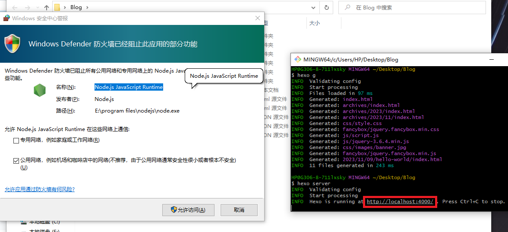
复制在浏览器中打开，即可看到博客页面 ：
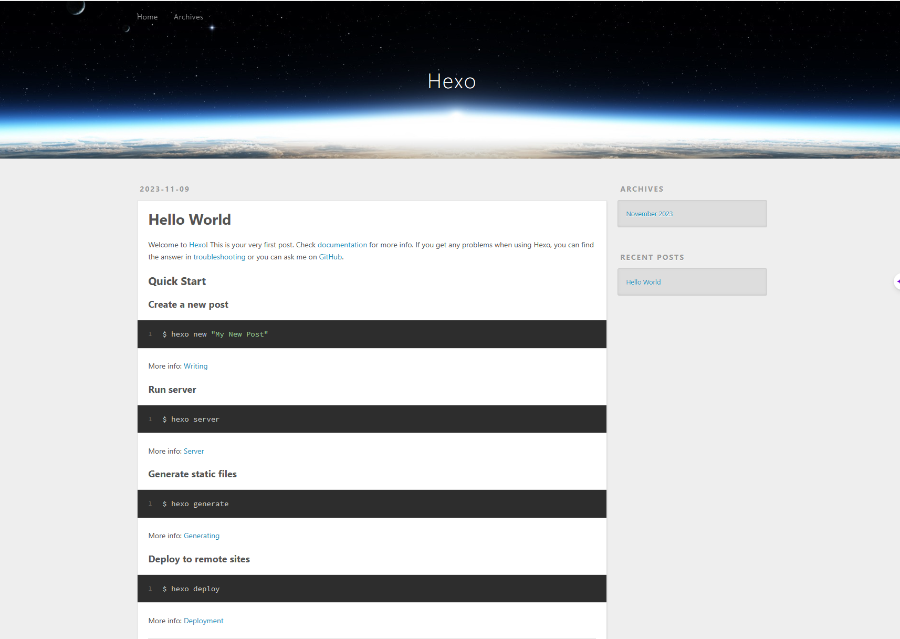
注：在Git Bash窗口中键入Ctrl+C即可停止预览
将博客推送到远程仓库
在此之前还需要先安装一点儿插件帮助我们，在Git Bash窗口中输入：
npm install hexo-deployer-git # 远程推送插件
npm install hexo-generator-feed # 博客订阅插件
如果没有报错，即安装成功
接着打开博客文件下的_config.yml文件，修改deploy配置为：
deploy:
type: git
repo: git@github.com:你的GitHub用户名/你的Github用户名.github.io.git
branch: main
实际上，repo即远程仓库的意思，这个对应的就是我们创建的个人博客仓库
示例：
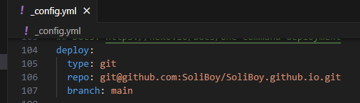
保存文件修改，并在Git Bash窗口中输入 ：
hexo d
没有报错即推送成功：
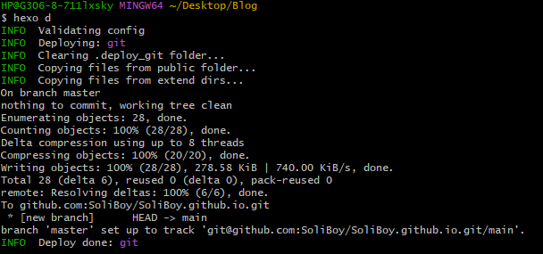
接着再到GitHub上看一看我们的博客仓库，会发现已经上传了文件：
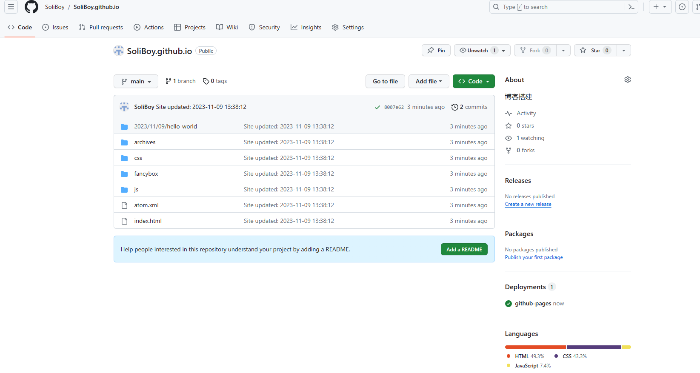
看一看Actions，也部署成功了 ：
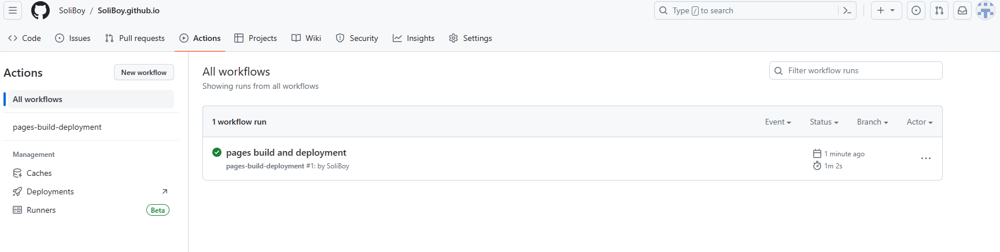
然后再在浏览器中输入地址
https://你的用户名.github.io
即可访问你的博客站点啦(同理别人亦可访问) ：
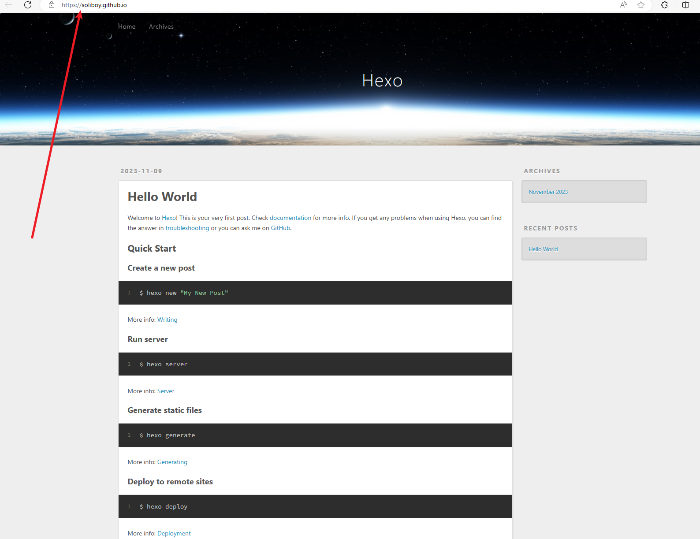
至此，基本的工作已经完成，可以开始写博客了
使用
贴一下Hexo中文官网，大家可以上去仔细看看Hexo的详细使用和说明
撰写博文
首先，将_config.yml中的post_asset_folder设为true:
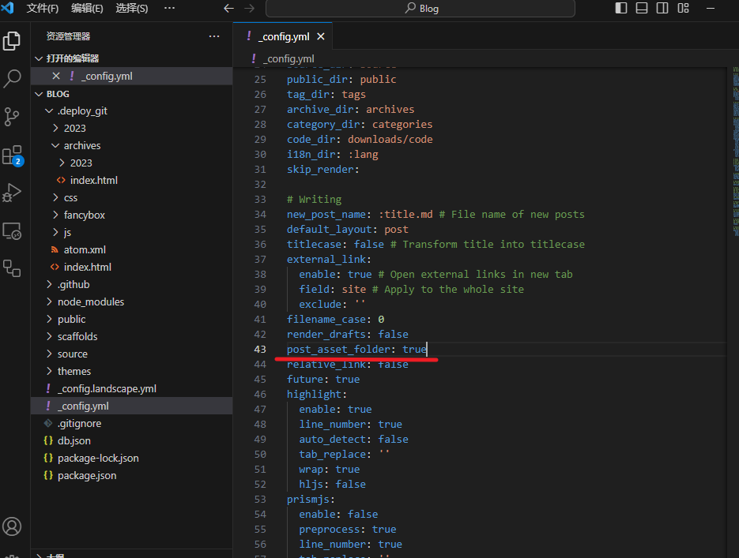
这个配置可以在你新建博文的时候自动生成一个对应文件夹(可以用来存放媒体文件)
然后在博客项目中打开Git Bash，输入 ：
hexo new 博文的文件名 #不要带.md
示例：
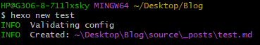
然后打开打印信息中对应的路径，就会看到新生成的markdown文件和对应的文件夹 ：
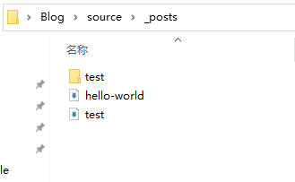
现在你可以尝试在媒体文件夹中放张图，博文中引一下，再写一写公式、emoji之类的，然后试着推送一下
注：每次推送，使用指令：
hexo cl #清除缓存
hexo g #生成页面
hexo d #推送远程
三条指令即可，且需要按照顺序
配置优化
嘿嘿，你可能会发现推送没问题，但是图片/公式/表情没法显示，这时候就需要来一些优化操作
由于每个人的偏好可能都不一样，所以这里并不会给出教程。大家遇到实际问题之后可以去查一查或者问问(善用搜索引擎和社区/文档)。
个性化
主题更换
Hexo官网上就有很多主题推荐： 主题列表
这里的配置就比较多了，大家可以根据自己的需要去看一看找一找，教程也有很多。建议大家可以换一换，不少主题比较好看而且可以修复一些默认主题下的问题。
我这里试了下fluid主题，换主题之后：

给个链接：fluid官方文档
进阶部署
这一部分借助GitHub Actions和仓库分支存储来进行自动部署
注意: 这里的部署步骤可能对新手不太友好 ，所以，建议你学习一些
，所以，建议你学习一些Git操作或者使用博客一段时间之后再来看看，试着自己配一配
1.克隆博客仓库至本地
选择一个工作文件夹，打开Git Bash，输入
git clone git@github.com:你的GitHub用户名/你的Github用户名.github.io.git
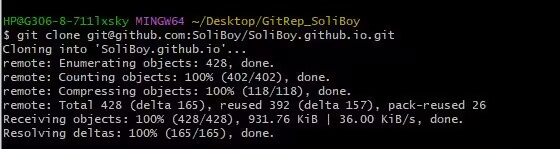
2.新建分支
同一个Bash窗口，键入
cd 你的Github用户名.github.io # 进入博客仓库文件夹
git branch dependent # 新建依赖工具分支
git branch html # 新建静态页面分支，存放生成的博客页面
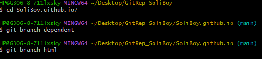
3.main分支文件修改
首先将你的仓库文件夹清空。
注：所有清空操作建议在Git Bash窗口中进行，键入
rm -f * -r # 强制递归清空仓库文件夹
这样不会将.git/文件夹中的仓库记录(这里此文件夹作为隐藏文件没有显示)删除，否则后续Git无法定位，也就无法继续操作
然后进到你的原Hexo项目下(可以在此新建一个Git Bash窗口)，输入
hexo cl
再将source目录下的所有文件以及根目录下.gitignore文件复制到仓库文件夹
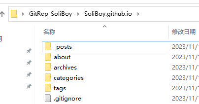
4.推送main分支更改
回到仓库文件夹下的Git Bash窗口，输入:
git add . # 添加所有文件
git commit -m "update branch main" # 提交更改
git push # 将修改推送到远程仓库
5.切换html分支并建立连接
git checkout html # 切换到静态页面分支
同理，清空文件夹，提交修改(此分支下现在没有文件)即可:
git add . # 添加所有文件
git commit -m "update branch html" # 提交html分支更改
git push --set-upstream origin html # 设置分支关联并推送
6.切换dependent分支并修改文件
Git Bash窗口键入:
git checkout dependent # 切换到依赖工具分支
同理，清空仓库文件夹。
再一次去到原Hexo项目，将除了source/目录的其余文件复制过来。
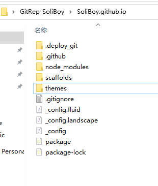
7.配置GiHub Actions工作流文件
在仓库文件夹.github/下新建一个目录workflows/(注意有两层目录)，在里面新建一个hexo_build_deploy.yml文件(这个文件可以暂时存到另外某个地方，还需要的)，内容如下：
name: Hexo Build & Deploy
on:
# 触发事件
push:
# 排除分支
branches-ignore:
- 'html'
# 工作流
jobs:
build:
runs-on: ubuntu-latest
steps:
# 分支文件检查聚合
- name: Checkout branch dependent
uses: actions/checkout@v2
with:
ref: dependent
path: ./
- name: Checkout branch main
uses: actions/checkout@v2
with:
ref: main
path: ./source
# 工具安装
- name: Use Node.js
uses: actions/setup-node@v3
with:
node-version: '20'
- name: Install dependencies
run: npm install
# 构建
- name: Build
run: npm run build
# 部署
- name: Deploy
uses: JamesIves/github-pages-deploy-action@v4.2.2
with:
branch: html
folder: public
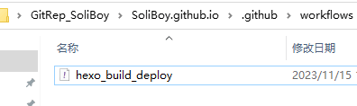
8.提交dependent分支修改
使用Git Bash输入：
git add . # 添加所有文件
git commit -m "update branch dependent" # 提交更改
git git push --set-upstream origin dependent # 设置分支关联并推送
9.修改GitHub仓库设置
先在博客仓库Settings的Pages中将Branch设置为html
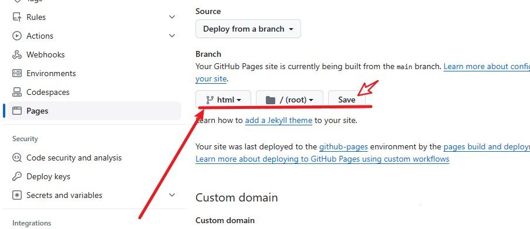
然后将Actions下的General中的Workflow permissons设置为Read and write permissions
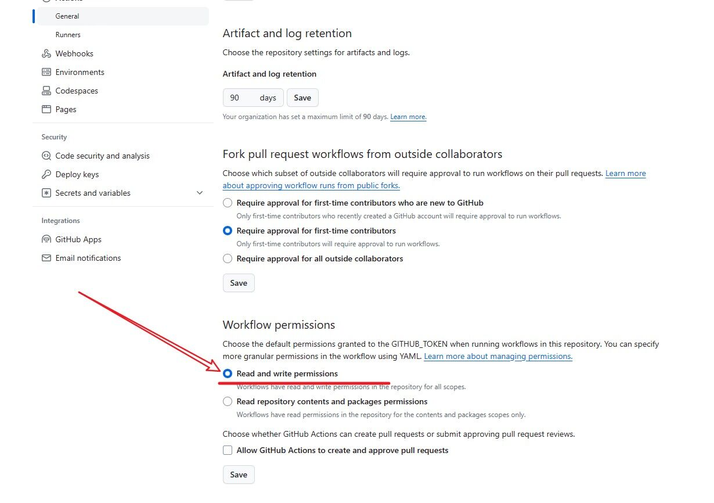
10.最后修改
最后，切换回main分支，并且把之前的hexo_build_deploy.yml文件以相同的路径和形式创建/复制即可(注意两层目录)
 推送一下即可成功！
推送一下即可成功！
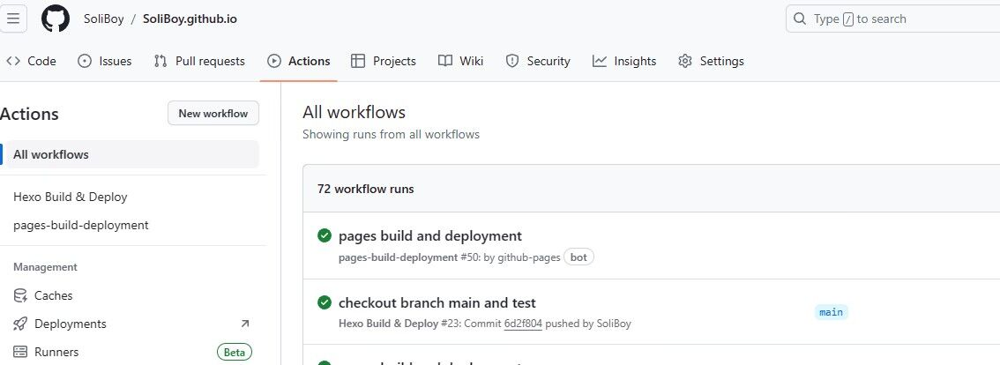
大功告成
现在，你每次写博文只需要在main分支下进行博文修改，非常干净，写完后直接推送(add/commit/push)即可；换设备也非常方便，不需要再装npm/hexo这些，只需要一个Git即可。
如果需要修改配置(建议不要频繁改动)，就切换到dependent分支，修改文件，推送即可，同样会触发工作流。
那么，现在开始享用自己辛苦搭建的博客吧